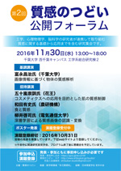

イベント
平成28年度イベント（第２回公開フォーラム）
| 日時 | 2016年11月30日（水）午後（終了後懇親会あり） |
|---|---|
| 会場 | 千葉大学 西千葉キャンパス 工学系総合研究棟２（２階）コンファレンスルーム https://www.chiba-u.ac.jp/access/nishichiba/index.html |
| 大会ポスター |  ←クリックするとPDFファイル（2.3MB）を表示します。 |
プログラム
プログラム詳細（PDFファイル、2.9MB、11月24日更新）
※基調講演、招待講演の詳細はこちらをご覧ください。
11:00~12:00 千葉大学ラボ見学会
12:00~13:00 受付、ポスター掲示
13:00~13:05 開会の辞
13:05~13:45 基調講演
富永昌治氏(千葉大学) 「画像情報に基づく物体の質感解析」
13:45~14:15 招待講演
和田有史氏(農研機構) 「食と質感」
14:15~16:15 ポスター発表、コーヒーブレイク
16:15~16:45 招待講演
柳井啓司氏(電気通信大学) 「深層学習による質感画像の認識・変換」
16:45~17:15 招待講演
五十嵐崇訓氏(花王) 「コスメティックスへの応用を目的とした肌の質感制御」
17:15~17:30 閉会の辞
17:30~ 懇親会
発表申込
※発表申込は締め切りました。
登録情報：発表者名・所属・演題・抄録発表申込先： https://goo.gl/ecvZnW 発表申込期間：2016年10月1日〜10月31日抄録について：
-
テキストのみ300文字以内図(幅64mm、高さ48mm)とテキスト165文字以内
のいずれかの形式を選択しご登録ください。抄録に図を載せることを選択した場合、発表登録後に画像ファイルをshitsukan.tsudoi@gmail.com まで送ってください。図のファイル形式は jpg, png などの画像データとし、1MB以下にしてください。画像ファイルの解像度は756 × 567 pixel （300dpi相当）
参加登録
※参加登録は締め切りました。
参加費：フォーラム聴講は無料・懇親会は有料（4,000円）
参加・懇親会申込先：https://goo.gl/ecvZnW
参加申込・懇親会申込期間：2016年10月1日〜11月15日
懇親会費振込期限：2016年11月17日
研究室見学
※研究室見学の人数が定員に達しましたので締め切りました。
時間：11:00〜12:00見学研究室：堀内・平井研究室と溝上研究室（各25分）定員：20名（10名×2グループ）
質感のつどいホームページ：https://www.shitsukan.jp/tsudoi/
多元質感知ホームページ：http://www.shitsukan.jp/ISST/
質感のつどい代表 小松英彦
第２回公開フォーラム
実行委員長 溝上陽子
副実行委員長 鯉田孝和
事務局 永井岳大
世話人会連絡先：shitsukan.tsudoi+info@gmail.com